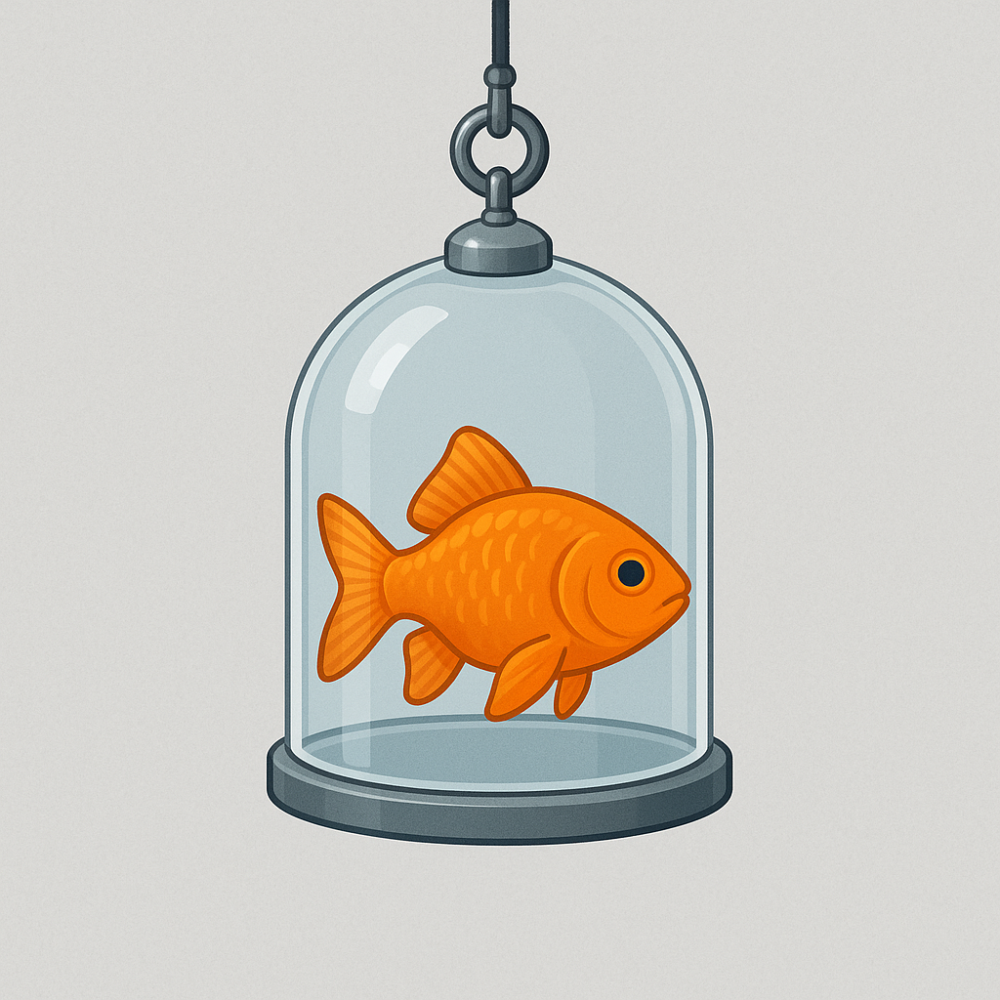
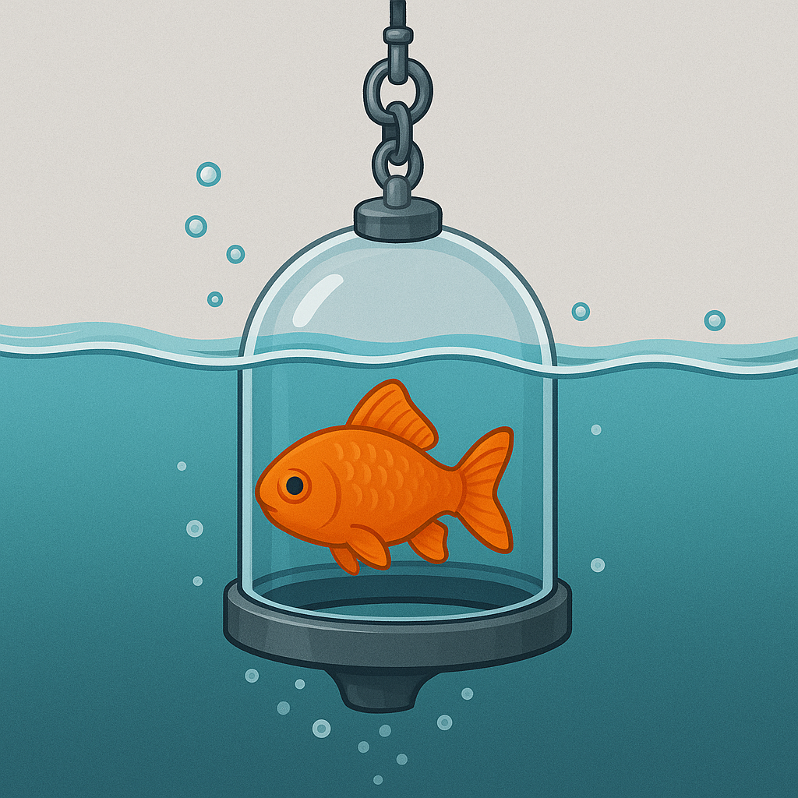

The New Way to Catch a Fish
No More Hooks = More Fish in the Sea to Release

Our Product
The Dome Fishing Rod
The sealed trapped door is a game-changer in the fishing world.

Step 1
The glass dome fills with water and invites the fish in with bait located near the entrance.
